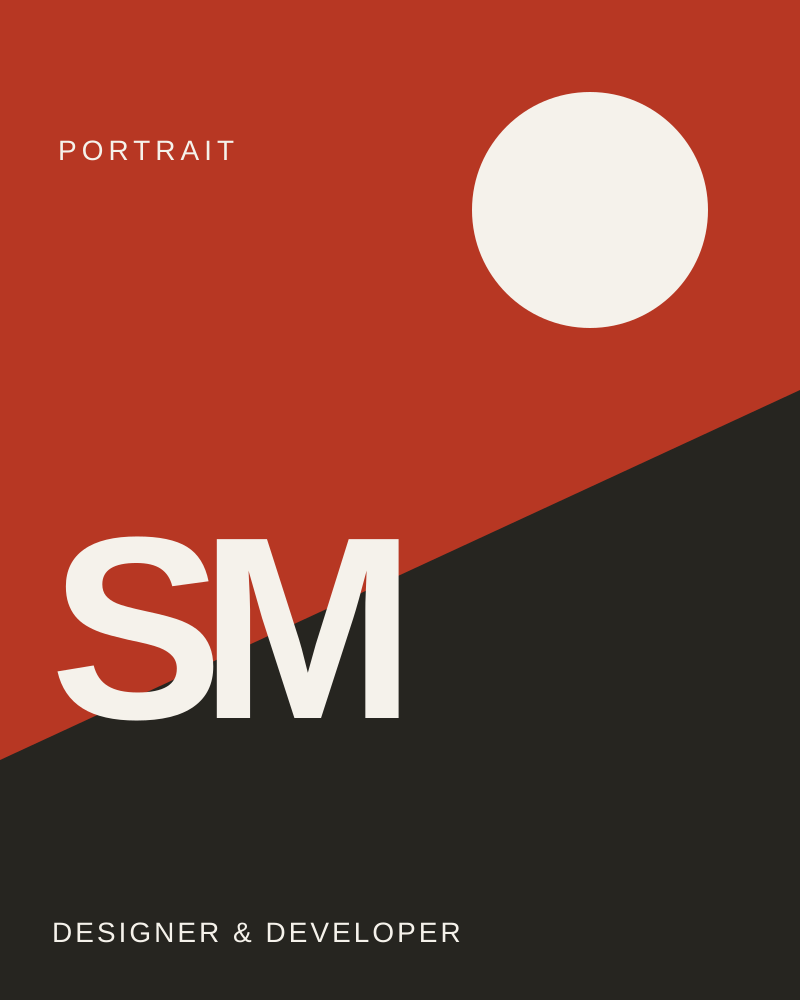

01
Begrijpen
De context, gebruiker en belangrijkste vraag scherp krijgen.
Over mij
Ik ben Samuel, laatstejaarsstudent Digital Experience Design. Ik gebruik design om mijn creativiteit om te zetten in ervaringen die helder, bruikbaar en visueel sterk zijn.

Waarom design
Wat mij het meeste energie geeft, is een idee effectief maken en het daarna blijven verbeteren. Door te itereren ontdek ik wat sterker, duidelijker en gebruiksvriendelijker kan.
01
De context, gebruiker en belangrijkste vraag scherp krijgen.
02
Ideeën zichtbaar en testbaar maken in flows, wireframes en prototypes.
03
Feedback gebruiken om keuzes te verfijnen en het resultaat sterker te maken.
01
Onderzoek, user flows, wireframes, prototypes en gebruikerstesten.
02
Visuele identiteit, typografie, compositie en motion.
03
Responsive interfaces bouwen met HTML, CSS en JavaScript.
Tools · Figma · Illustrator · Photoshop · Premiere Pro · After Effects